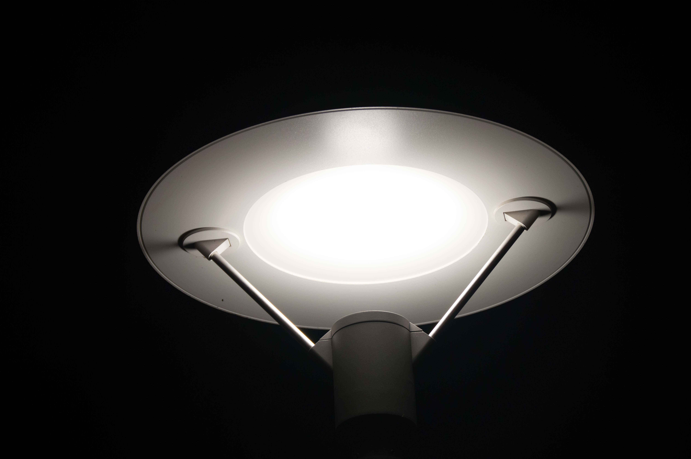
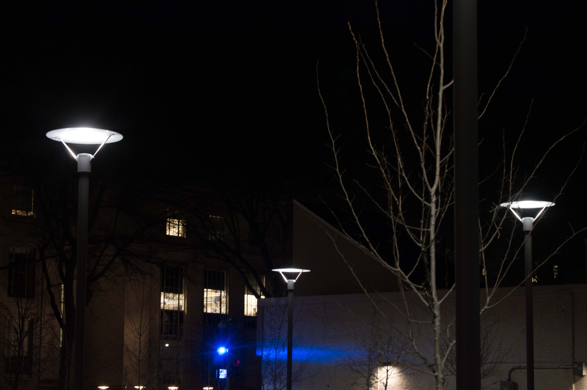
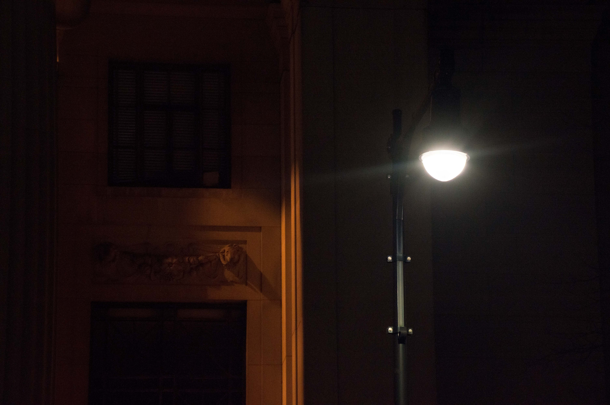
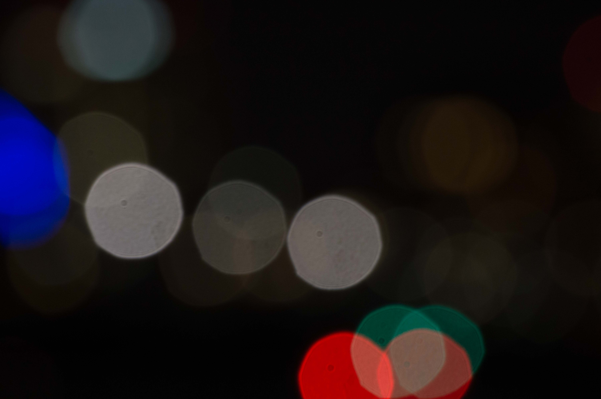
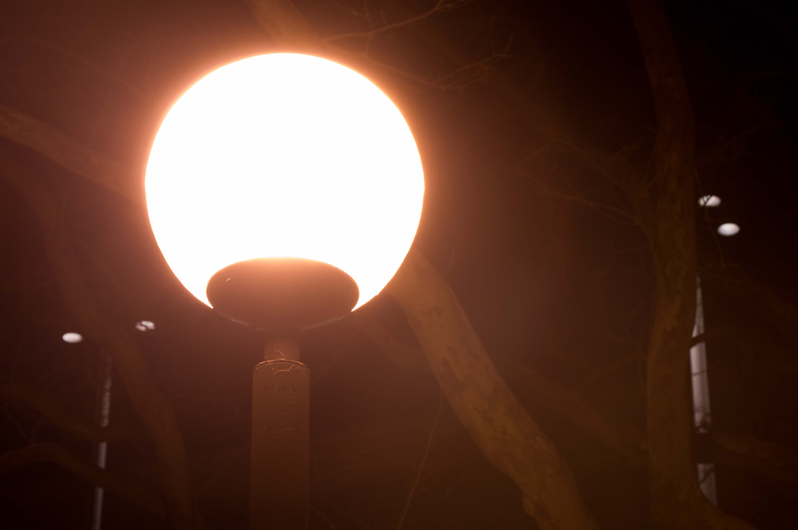
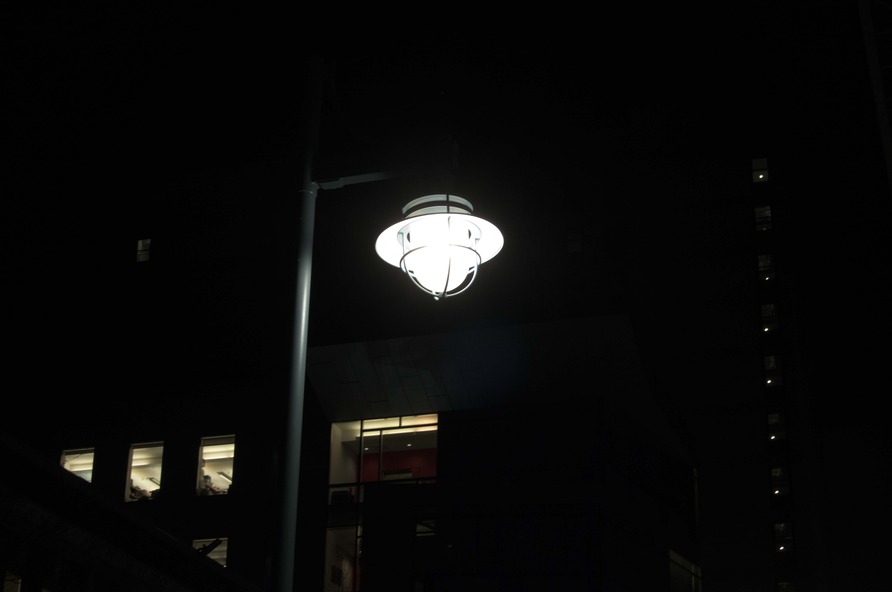
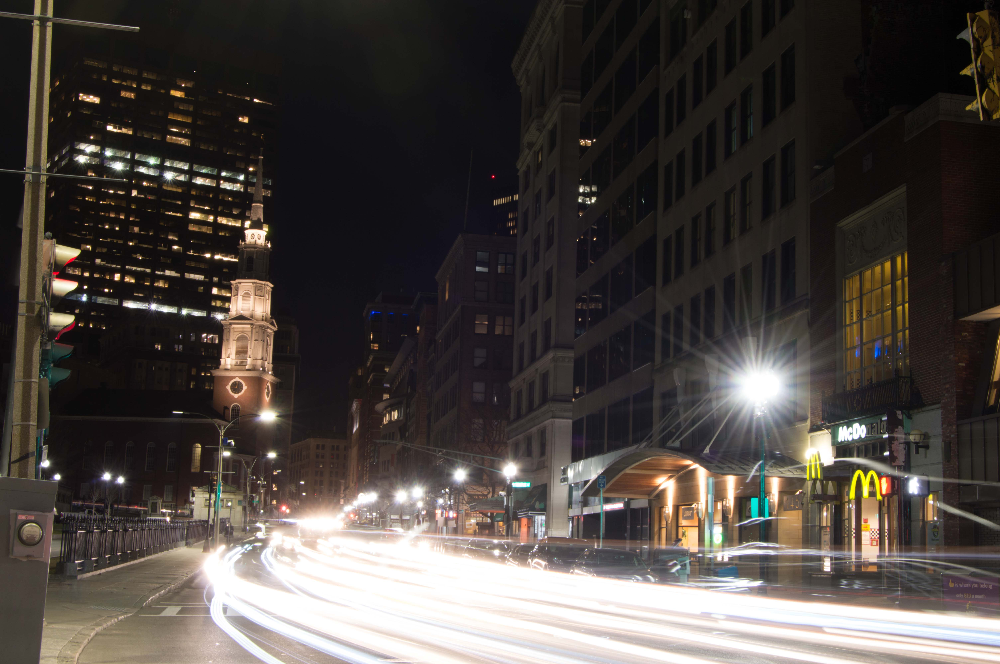
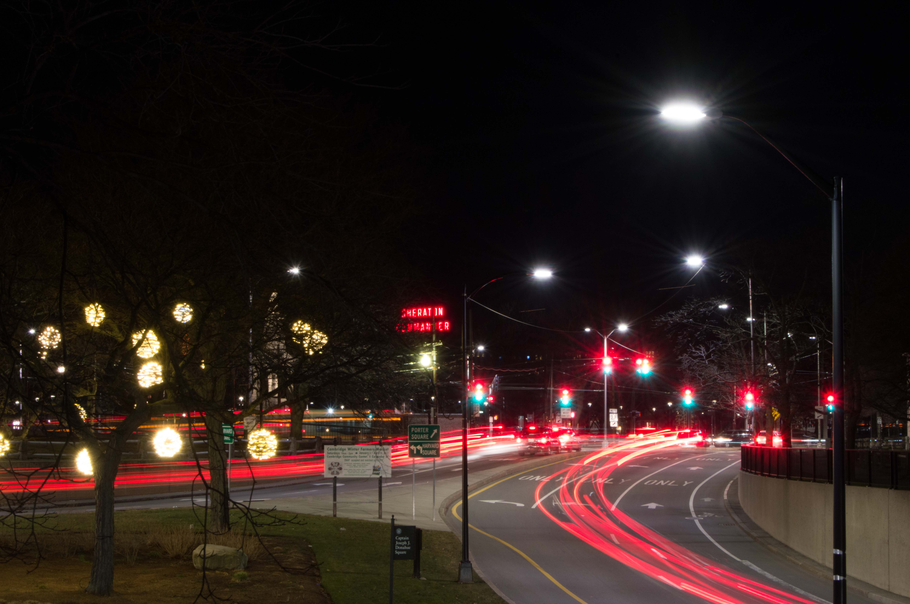
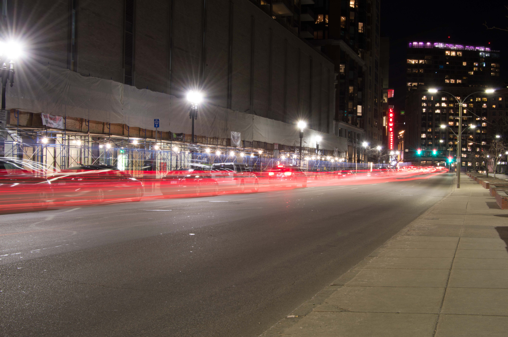
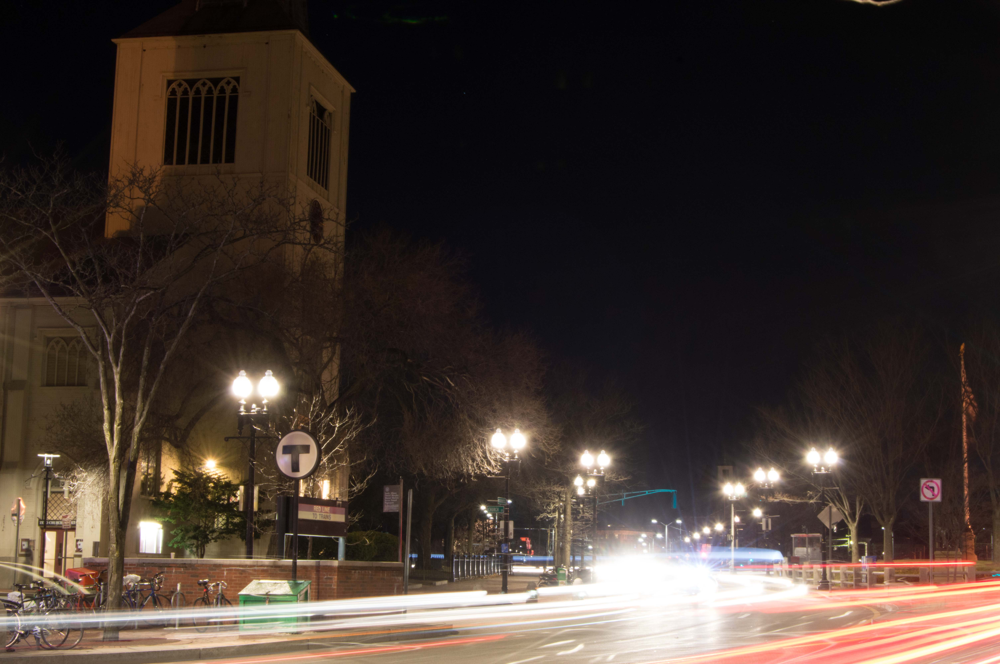

"Photographers are violent people. First they frame you, then they shoot you, then they hang you on the wall." - Unknown
Photos shot with a Nikon D3200, NIKKOR ED II 18-55mm lens, and the NIKKOR ED 55-200mm lens. Photos were taken from a compliation of ~100,
around Cambridge (Kendall Square, Harvard Square), Boston Commons, and Fenway/Kenmore (Harvard Medical School Campus).
UFO Light - Outside MIT Chapel

UFO Light

Cluster of UFO Lights
This light exhibits a beautiful white glow. It's fully capped at the top and has an outer edge that keeps
light from leaking out horizontally, while allowing it to focus on the ground below. The pole on the middle
also stops much of the light from moving downward, so it's a fairly dim light given it's design.
The picture here exhibits an object with a fairly atypical light design - at first glace it looks like a
flying saucer. The photograph makes it unclear if this is indoors, outdoors, close, or far away. It truely
uses the power of a good zoom lens, and perfectly stands out amidst the empty background behind it.
Lonely Streetlight - Outside Building 7

Lonely Light
Though this light stands alone, this light is standard issue for streetlights around the Kendall area.
The light shines brightly from high above the streets, pointing directly down with no obstruction. Much light
escapes to the side, but it brightly lights up the area around it.
The picture tells a story of a single light - from a viewers perspective it's unclear this is among a whole
street of other lights. The light is also surrounded by an interesting yellowish glow, and it's unclear if
this light caused the lights or not.
Unexpected Bokeh - Mass Ave Across the Charles River

Blurry view of streets
My camera autofocus went nuts and I had a chance to capture this. It' shows color and light in its most
photographically abstract form. Despite the blur, the color scheme seems to suggest a picture of a
busy street.
Bright Park Light - Outside MIT Chapel

Super bright park light
This light has a warm and extremely bright 360 degree glow. This is precisely the type of lighting that
causes light pollution, as it sends light directly upward. The light was part of a series that lighted up the
area outside of the MIT Chapel.
The picture was particularly hard to capture due to this light's brightness, and it overwhelms the rest of the frame.
Lanturn Light - Harvard Medical Campus

Lanturn LightLast light glows more warmly
This light functionally acts as a streetlight, pointing directly downwards, but, like the UFO light,
has undergone some aesthetic considerations. The designer clearly intended it to imitate an old fashioned
lanturn, and also went out of their way to let a tiny bit of light escape from the top part to facilitate
aesthetics.
The second picture shows this light in a series. Notice that the last bulb in the line is different than all
of the others. I wish I had taken this picture a bit better to show the break in symmetry.
Inefficient Light - Beside the Charles River
Not much light
This light fails to shine in any direction but horiziontally. It's placed almost purely for aesthetics.
The picture itself is also not particularly interesting but I thought to include it to fully document the types of
lights that I've seen.
Slanted Light - Boston Commons
Why is it tilted?
One immediately notices that this lightpost has been shifted off center, particularly in contrast with the
decorative light behind it. This is the standard streetlight around the Boston Commons Area. It shines
moderately bright, and notably has some type of black cap inside that blocks some light from seeping upwards
into the sky, albeit not particularly well. This was one of the few lights I saw that came in pairs of two,
likely an aesthetic throwback to torches. The smaller spherical lights in the back serve as an interesting contrast, not only in size and shape,
but color.
100 Lights for 1 Person - Harvard Yard
One random guy walking
Harvard Yard is particularly bright throughout the night, despite having few visitors. Most of the lights are small,
and serve to illuminate not only the walkways below but also the banners on the poles. They also point directly
downwards, and come in pairs of two.
Long Exposure Lights Around the City - Boston Commons, Harvard Law School

Bright front carlights

Cambridge Commons Park

Boston Commons

Harvard Square
This series of long exposure shots shows what other pictures cannot: motion. Much of what makes Boston the light-polluted
city that it is, are the vehicles that that constantly light up the streets through the night. One can notice
how front car lights are much brighter than lights in the back, and how the street lights are particularly
bright from the long exposure shots.